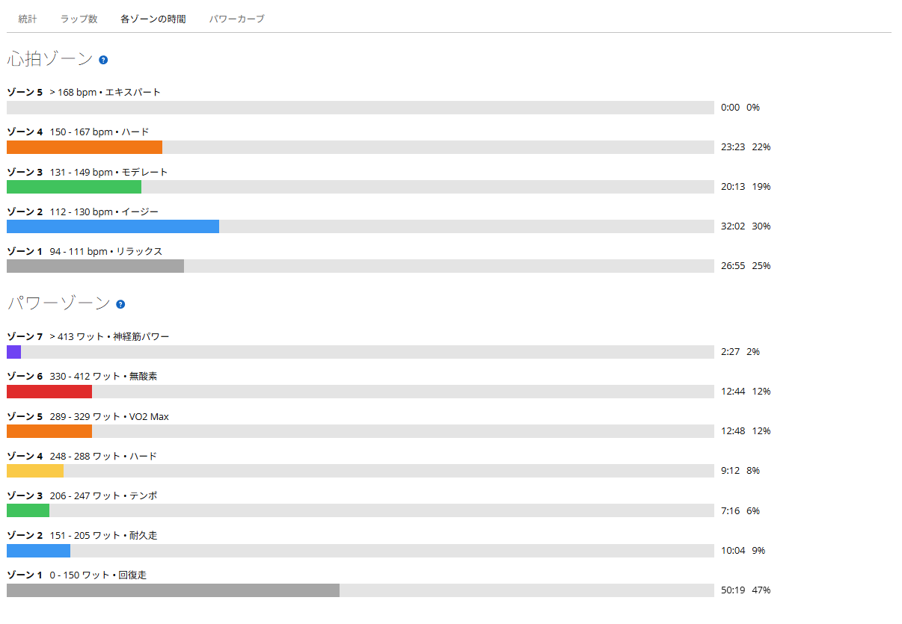
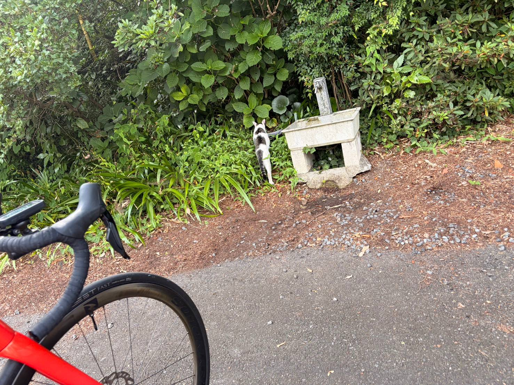

ゴルビー5本を11W差で揃えた。耐えるだけの練習ではなくなってきた
今日は友人2人と3人で、いつもの唐沢にゴルビー。一昨日は30/30、昨日は回復走のつもりで踏みすぎている。ここ数日はそれなりに負荷が続いていた状態での5分×5本である。
結果は323W、328W、328W、321W、332W。5本平均326.4Wで、最低と最高の差は11W。しかも5本目が一番高い。前回は1本目を飛ばして31W落としたので、そこからは明確に変わった。ただ、今日いちばん大きかったのは数字そのものではなかった。

37.18km・NP250W・TSS143.8
- 全体37.18km / 1時間45分00秒 / 獲得772m
- 負荷平均165W / NP250W / IF0.909 / TSS143.8 / 最大632W
- 心拍・回転平均128bpm / 最大167bpm / 平均79rpm / 左右51％：49％
- 環境平均28.3℃ / 最高32.0℃ / 推定発汗1,391ml
- 効果有酸素TE3.9 / 無酸素TE1.5
気温だけ見れば極端ではないが、湿度が高くて汗がまったく乾かなかった。放熱しにくい感覚が強い日である。それでもメニュー自体は問題なくこなせた。きついのは、いつも通りだ。
5本を323・328・328・321・332Wで並べた
ゴルビーは5分ON、5分レストで5本行った。
- 1本目5分02秒 / 323W（NP326W）/ 心拍154〜161bpm / 88rpm
- 2本目5分01秒 / 328W（NP333W）/ 心拍152〜166bpm / 84rpm
- 3本目5分01秒 / 328W（NP333W）/ 心拍155〜164bpm / 88rpm
- 4本目5分01秒 / 321W（NP328W）/ 心拍155〜164bpm / 87rpm
- 5本目5分01秒 / 332W（NP336W）/ 心拍157〜167bpm / 89rpm
5本平均326.4W、最低321W、最高332Wで差は11W。前回は348W、339W、333W、323W、317Wと1本目から31W落ちた。今回は最後が一番高い。前回から一番変わったのはここだと思う。
「頑張る」から「調整する」に変わった
今日いちばん印象に残ったのは、出力を見ながら調整する余裕があったことだ。
前までは「とにかく頑張る」という感覚が強かった。5分をどうにか耐える。数字は見えていても、それを細かく直すより最後まで粘ることが先だった。今日は330W付近を狙いながら、少し高ければ落とす、低ければ上げる。そういうことを考える余裕があった。もちろん330Wに固定できるほどではないし、次回もブレると思う。それでも最初から最後まで「ただ耐えるだけ」ではなくなった。平均パワーの数字より、こちらの方が大きい変化だと思う。
なので当面の目標は、330Wぴったりに揃えることではなく、まず325〜335Wの範囲に5本とも収めることにする。ぴったり合わせるのはその次でいい。
直前2日を足すと、3日でTSS307.9
今日だけを見れば「配分がうまくいった」で終わる話である。ただ直前2日にもそれなりに負荷が入っている。30/30の日がTSS101.4、その翌日の唐沢が62.7、そして今日が143.8。3日合計でTSS307.9になった。
しかも昨日は回復寄りの予定だったのに、唐沢を7分03秒・265W、帰りのストレートを2分15秒・371Wで踏んでいる。その翌日にゴルビーを5本揃えた。最近感じていた「基礎体力が上がって、連日の負荷に対する耐久性も上がっているのでは」という感覚は、かなり現実味が出てきた。1回で全部決めるつもりはないが、少なくとも以前より負荷を受け止める力は上がっていると考えてよさそうだ。
心拍ゾーン5は0秒。脚には厚く入っている
心拍はゾーン4が23分23秒で、ゾーン5は0秒。一方パワーはゾーン5が12分48秒、ゾーン6が12分44秒、ゾーン7も2分27秒あった。
高出力側にはかなりの時間が入っているのに、心拍はゾーン5まで届いていない。ゴルビーの5本はきついが、心肺が完全に破綻するところまでは行っていないということだ。「きついのはいつも通り」という体感とも一致する。

5本終えたあとに、帰りストレート、2分20秒・350W
- 帰りのストレート2分20秒 / 平均350W / NP350W / 最大576W / 平均47.4km/h
ゴルビー5本を終えた後で、これである。以前なら5本終わった時点で「今日はもう終わり」という感覚がもっと強かった。まだ高い出力を出す余裕が残っていたのは、今回の耐久性を見る材料として悪くない。もっとも、昨日も同じストレートで371W出しているので、単にこの直線が好きなだけという可能性も否定できない。
唐沢の地域猫を、久しぶりに見た
今日は友人が水分補給をするというので、唐沢山の駐車場まで上がった。普段の練習では駐車場まで行かない。地域猫がいるのは知っているが、猫は駐車場付近にいるので、いつものルートだと会う機会がほとんどない。

きつい5分走の合間に癒やされた、という話ではない。友人の水分補給についていったら猫がいた、というだけである。それでも少し気持ちは和んだし、写真も撮れた。今日の素材の中では、間違いなく一番平和な1枚だと思う。
次は60/60ではなく、60/30にする
一緒に走ったメンバーにも短時間インターバルの話をした。そこで出たのが「60秒ON／60秒OFFだと、レストが長すぎないか」という指摘だった。
確かに今の目的は、5倍付近へ一度入ることではない。高い出力に入った状態を、短いレストを挟みながら何度も繰り返すこと、しかもできれば実走で、である。60/60はOFFが同じ長さなのでかなり回復できてしまう。唐沢なら下りに入った時点でほぼ完全回復だ。それなら60秒ON／30秒OFFの方が目的に合っている。1分踏んで、30秒だけ軽くして、また1分踏む。これなら心拍と呼吸を落としすぎずに、5倍付近へ何度も入りやすい。
- 構成60秒ON / 30秒OFF / 1登坂＝1セット
- 区切り頂上へ着いたら終了。下りはセット間レスト。まず2登坂
- ON出力初回は360〜375W目安（75kgで5倍付近が375W前後）
ONは最初から380W固定にしない。60/30は60/60よりかなり強いはずなので、6〜7本目あたりから明確に苦しくなり、それでもフォームを崩さず続けられるくらいが理想だと思っている。
3本柱は維持して、増やすのは強度ではなく仕事量
ここ数日で練習の方向はかなりまとまった。長い実走高強度（太平→琴平→唐沢）で290〜300W付近を長く維持し疲労後も踏み直す力をつける。VO2持続（ゴルビー5分×5本）で330W前後を5本揃える。短時間反復（唐沢60/30）で5倍付近へ何度も入る。この3本柱を、月曜に長い実走、水曜に60/30、金曜にゴルビーで回すのが基本になる。土日は友人ライド優先で、週末の負荷しだいで平日は動かす。
そして今日の結果を見ると、練習をもう少しハードにしてよい可能性は高い。ただしゴルビーをいきなり340Wや350Wへ上げるという意味ではない。今上げたいのはピークの強度ではなく、週全体の仕事量だ。月水金を維持したまま、火曜と木曜も回復が良ければテンポやSST下限、長めのベース、短い実走を入れる。強度日をさらに強くするより、強度日の間にも仕事ができる身体を作る方が、今の方向には合っている。
今日やってみて思ったこと
今日のゴルビーはきつかった。ただ前回とは中身が違う。前回は5本を耐えること自体に集中していたが、今回は出力を見ながら調整する余裕があった。
5本平均326.4W、最低321W、最高332W、最後が332W。数字そのものより「揃えようとして揃えられた」ことの方がうれしい。330Wぴったりはまだ難しいし、次回もブレると思う。それでもまずは325〜335Wへ5本とも収めるところから始める。短時間反復は60/60ではなく60/30へ変えて、5倍付近を踏む時間を増やしながら、唐沢という実走環境で続けられる形を探す。長い実走、ゴルビー、60/30。ようやく今やるべきことが整理されてきた。
次に見るポイント
- ゴルビー5本を325〜335Wへ収められるか。調整する余裕がさらに増えるか
- 60/30360〜375Wをどこまで揃えられるか。6〜7本目以降もフォームを維持できるか
- 耐久性連日負荷後でも高強度の質を保てるか。翌日以降の回復が以前より早いか
- 週の設計火曜・木曜に負荷を足しても月水金の質を落とさないか
- 身体膝・足首・腰に違和感が出ないか
ゴルビー5本をただ耐える段階からは、少しだけ先へ進めた気がする。次は狙った数字を、もっときれいに並べる。